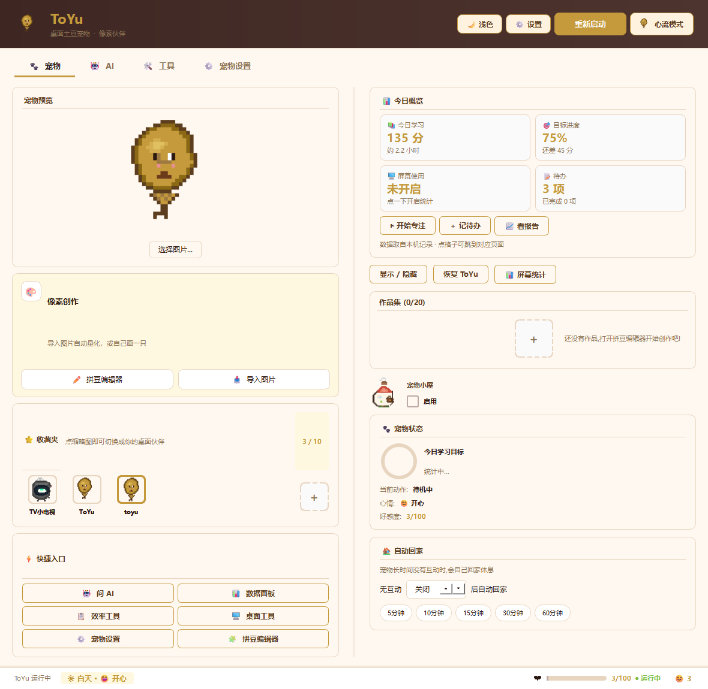
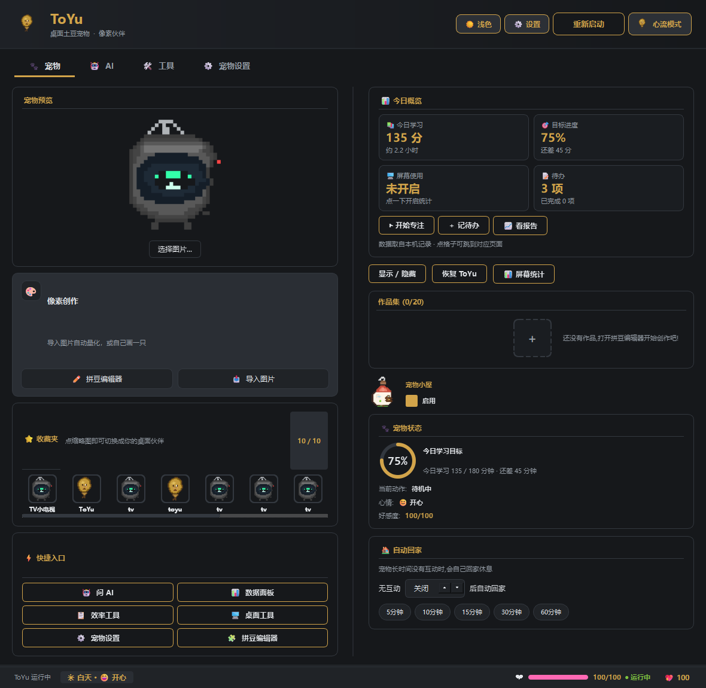

🧠
长期记忆
20 个受控槽位 · 不信模型自报的置信度
模型说"我很确定"没用。ToYu 从证据文本重新估算置信度： 看到「我叫…」「记住…」这类显性信号才给 0.90 以上； 含糊表述压到 0.60 以下并主动向你确认。
不引入向量库 —— 2-gram + 时间衰减即可解释、零依赖、可预测
ToYu 是一只住在桌面上的像素宠物 —— 但外壳之下是一套完整的 智能体运行时。它算的"有效学习时长"不是让你自己填的， 而是从屏幕时间里实测出来的；它盯着你的每日目标、到点提醒、 发现欠账就补上。你说一句"帮我安排下周的复习计划"， 它真的会去查你的学习记录、写进待办、设好目标。
普通 AI 助手给你一段建议，然后你自己去执行。ToYu 直接动手做 —— 调用本机 12 个工具、观察结果、再决定下一步，最多自主跑 5 轮。 它甚至能改软件自己的设置（"打开深色模式""番茄钟改成 45 分钟"） 和把界面切到你面前，而不是只回你一句"好的"。
每轮：模型决策 → 调用工具 → 观察真实结果 → 再决策。 不是一次性生成，而是像人一样边做边看。
工具参数走 JSON Schema：类型、长度、取值范围都查。 不合法就把原因回灌给模型，让它自己改 —— 而不是执行坏参数。
20 个受控槽位 · 不信模型自报的置信度
模型说"我很确定"没用。ToYu 从证据文本重新估算置信度： 看到「我叫…」「记住…」这类显性信号才给 0.90 以上； 含糊表述压到 0.60 以下并主动向你确认。
6 个优先级块 · token 预算内自动裁剪
它"知道"你此刻的桌面状态：待办、学习情况、日程、宠物状态、 当前应用、剪贴板。按优先级排序，超预算就从最低优先级开始丢。
子线程跑循环 · 主线程碰 Qt
Agent 主循环在子线程，需要操作界面的工具排队回主线程执行。 如果主循环自己占着主线程，一调工具就死锁。
任何一层坏了都不影响主流程
记忆、上下文、报告分析各自独立降级。 模型连不上、Key 失效、返回格式乱 —— 桌宠照常计时、照常记录， 只是 AI 那部分暂时不可用。
发一张日程/课程表截图，ToYu 识别其中的时间与事项， 自动提取线上会议号（腾讯会议 / Zoom / 飞书等）， 写入日历并设置提醒，再问你要不要加进待办。
这些功能完全不依赖大模型 —— 不配 API Key 也照常可用，数据全在本机。
👇 点任意一张卡片，看它实际跑出来的样子
按日/周/月汇总有效学习时长、应用分布、时段规律、完成任务数。 支持「基础版」纯本机统计，与「AI 版」深度分析。
番茄轮次、休息提醒、今日专注时间轴一屏看完。 计划栏支持给每项任务独立计时，随时知道时间花在哪。
设定每天要学多久，进度环实时反映达成情况， 并按天记住你的历史表现，形成可见的坚持曲线。
应用排行、时段分布、与昨日对比。 跨零点会正确切分，不会把昨天的时间算进今天。
内置拼豆编辑器：导入任意图片自动量化成有限色板， 或自己动手画；作品收进收藏夹，随时切换成你的桌面伙伴。
好感度、心情、时间感知、天气感知。 深夜它会变暗变慢，下雨会自己撑伞 —— 这些不是装饰， 而是让它长期待在你桌面上不烦人的关键。
副标题
深色模式的每一组配色都按 WCAG AA 标准实测过（正文对比度 12.7:1）， 不是把颜色反过来就完事。点标签切换看看。


深色模式下面这些是真的能用的（就在你的浏览器里跑，不需要联网）。桌面端功能更完整。
切到别的标签页再回来，进度依然是对的 —— 它按真实时间戳计算。
桌面版会自动统计你真实的学习时长，这里用按钮模拟。
示例数据。桌面版用你本机真实记录生成，并可导出 Markdown。
下面是一个离线演示：回答来自预设脚本，用来展示它拿到工具结果后 会怎么组织语言。真实的多步工具调用需要运行桌面版（要你自己的 API Key）。
网页版没有后端，无法持有 API Key（放前端会泄露）。 真实的多轮工具调用、长期记忆、上下文注入都要在桌面版里跑。
这也正是为什么这个作品是桌面软件而不是网页应用 —— 你的数据不出本机，Key 也不经过第三方服务器。
Windows 10 / 11 64 位。绿色版，删掉文件夹即卸载；数据存在你自己的用户目录里。
ToYu\ToYu.exe 启动Windows 10/11 64 位；约 300 MB 磁盘空间。纯本机功能（计时、报告、目标、拼豆） 无需联网、无需独显。AI 对话需要你自备 API Key。
不会。计时、屏幕统计、待办、记忆都存在你本机的用户目录。 只有你主动使用 AI 功能时，相关文本才会发给你自己配置的模型服务。
因为它默认就是一颗圆土豆 —— 你可以导入任意图片，或自己用内置的拼豆编辑器画一只， 把它换成你想要的任何样子。